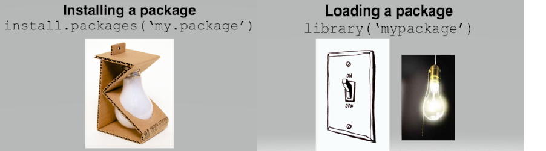

Code
# paket yukleme
install.packages("CTT")
# paket aktive etme
library(CTT)R’yi yüklediğinizde, veri işleme ve istatistiksel analiz seçenekleri de dahil olmak üzere bir dizi fonksiyona erişebilirsiniz. Varsayılan kurulumda yer alan fonksiyonlar genellikle Temel R/Base R olarak adlandırılır ve birçok Temel R fonksiyonunu gösteren faydalı bir cheatsheet sayfası vardır 🔗cheatsheet
Temel R telefonunuzda gelen varsayılan uygulamalar, paketleri ise ayrıca indirmeniz gereken ek uygulamalar olarak düşünmek faydalı olabilir.
R fonksiyonları ayrı paketler halinde düzenlenmişlerdir. Böylece gerekli paketlerle çalışarak daha az bellek kullanımı ve hızlı işlem gücü sağlanır.
Bu paketlerin bir başka avantajı da yazılan fonksiyonlardan oluşan paketlerin CRAN’den temin edilerek yüklenebilmesidir.
Her paketin bir yaratıcısı ve kendisine ait bir yardım dosyası bulunur.
Paket yükleme işlemi Rstudio’da yer alan menüler aracılığı ile de yapılabilmektedir.
R paketleri R fonksiyonlarının, verilerinin ve iyi derlenmiş bir formatta kodların kombinasyonlarından oluşmaktadır. library() komutu ile kişisel kütüphanenizdeki yüklü paketleri görebilirsiniz.
Sadece temel pakette 1000’den fazla fonksiyon bulunmaktadır.
[1] 1407 [1] "default.stringsAsFactors" "declare"
[3] "debugonce" "debuggingState"
[5] "debug" "date"
[7] "data.matrix" "data.frame"
[9] "data.class" "cut.POSIXt"
[11] "cut.default" 
tidyverse paketini yükler.UYARI: WARNING: Rtools is required to build R packages” gibi bir hata mesajı alırsanız, [Rtools] (https://cran.r-project.org/bin/windows/Rtools/) adlı ekstra bir yazılım indirmeniz ve yüklemeniz gerekebilir.
Bir hata mesajı gibi görünen bir şey alacaksınız - öyle değil. Bu sadece R’nin size ne yaptığını anlatmasıdır.
Şimdi tidyverse paketini etkinleştirdiğimize göre, içerdiği fonksiyonlardan herhangi birini kullanabiliriz, ancak unutmayın, R’yi her başlattığınızda library() fonksiyonunu çalıştırmanız gerekir.
Bazı R paketleri github üzerinden yayınlanmaktadır. Bu paketleri standart yollarla yükleyemiyiz. Bu paketleri yüklemek için ilk olarak devtools paketinin yüklü olmasına ihtiyaç vardır.
Bu paketlere bir örnek yapısal eşitlik modelleri ile ilgili APA formatında tablolar üreten semtools verilebilir. Paketin github sayfası 🔗linkte yer almaktadır. Paketin yüklenmesi için örnek kod aşağıda verilmiştir.
? ve help() fonksiyonları ayni işleve sahiptir.dplyr ve MASS paketlerinin her ikisi de select() adında bir fonksiyona sahiptir. Bu paketlerin her ikisini de yüklerseniz, R size bir çakışma olduğunu söyleyen bir uyarı üretecektir.Bu durumda, R size dplyr paketindeki select() fonksiyonunun aynı isimli başka bir fonksiyon tarafından gizlendiğini (veya ‘maskelendiğini’) söylüyor. Eğer select() fonksiyonunu kullanmayı deneseydiniz, R en son yüklenen paketteki fonksiyonu kullanacaktı - bu durumda MASS fonksiyonunu kullanacaktı.
Belirli bir fonksiyon için hangi paketi kullanmak istediğinizi belirtmek istiyorsanız, örneğin package::function biçiminde kod kullanabilirsiniz:
R ve R Studio güncellemelerine ek olarak, paketlerin yazarları da bazen kodlarını günceller. Bu, bir pakete fonksiyon eklemek için olabileceği gibi hataları düzeltmek için de olabilir. Kaçınılması gereken bir şey, yüklü bir paketi istemeden güncellemektir.
install.packages() fonksiyonunu çalıştırdığınızda, her zaman paketin en son sürümü yüklenir ve yüklemiş olabileceğiniz eski sürümlerin üzerine yazılır. Bazen bu bir sorun teşkil etmez, ancak bazen paket önemli ölçüde değiştiği için güncellemenin kodunuzun artık çalışmadığı anlamına geldiğini görürsünüz. Bir paketin eski bir sürümüne geri dönmek mümkündür ancak yine de bundan kaçınmaya çalışın.
Bir paketin üzerine yanlışlıkla daha sonraki bir sürümün yazılmasını önlemek için, sizin veya bir başkasının kodu yanlışlıkla çalıştırması ihtimaline karşı analiz komut dosyalarınıza install.packages() i asla dahil etmemelisiniz.
R’a atıfta bulunmanız ve referans vermeniz gereken bilimsel bir rapor yazmaktan biraz uzak olabilirsiniz, ancak zamanı geldiğinde bunu onu geliştiren insanlara (çoğu ücretsiz!) kredi vermek için yapmak önemlidir. R, RStudio ve kullandığınız paketler için ayrı alıntılar sağlamalısınız.
Kullandığınız R sürümü için atıf almak için, size her zaman en son atıfı sağlayacak olan citation() fonksiyonunu çalıştırmanız yeterlidir.
To cite R in publications use:
R Core Team (2024). _R: A Language and Environment for Statistical
Computing_. R Foundation for Statistical Computing, Vienna, Austria.
<https://www.R-project.org/>.
A BibTeX entry for LaTeX users is
@Manual{,
title = {R: A Language and Environment for Statistical Computing},
author = {{R Core Team}},
organization = {R Foundation for Statistical Computing},
address = {Vienna, Austria},
year = {2024},
url = {https://www.R-project.org/},
}
We have invested a lot of time and effort in creating R, please cite it
when using it for data analysis. See also 'citation("pkgname")' for
citing R packages.citation() işlevini de kullanabilirsiniz.To cite package 'tidyverse' in publications use:
Wickham H, Averick M, Bryan J, Chang W, McGowan LD, François R,
Grolemund G, Hayes A, Henry L, Hester J, Kuhn M, Pedersen TL, Miller
E, Bache SM, Müller K, Ooms J, Robinson D, Seidel DP, Spinu V,
Takahashi K, Vaughan D, Wilke C, Woo K, Yutani H (2019). "Welcome to
the tidyverse." _Journal of Open Source Software_, *4*(43), 1686.
doi:10.21105/joss.01686 <https://doi.org/10.21105/joss.01686>.
A BibTeX entry for LaTeX users is
@Article{,
title = {Welcome to the {tidyverse}},
author = {Hadley Wickham and Mara Averick and Jennifer Bryan and Winston Chang and Lucy D'Agostino McGowan and Romain François and Garrett Grolemund and Alex Hayes and Lionel Henry and Jim Hester and Max Kuhn and Thomas Lin Pedersen and Evan Miller and Stephan Milton Bache and Kirill Müller and Jeroen Ooms and David Robinson and Dana Paige Seidel and Vitalie Spinu and Kohske Takahashi and Davis Vaughan and Claus Wilke and Kara Woo and Hiroaki Yutani},
year = {2019},
journal = {Journal of Open Source Software},
volume = {4},
number = {43},
pages = {1686},
doi = {10.21105/joss.01686},
}RStudio.Vesion() fonksiyonunu kullanabilirsiniz:Analiz R (R Core Team, 2020), RStudio (Rstudio Team, 2020) ve tidyverse paketi (Wickham, 2017) kullanılarak gerçekleştirilmiştir.
Belirtildiği gibi, bunu hemen yapmak zorunda kalmayabilirsiniz; ancak, yapmanız gerektiğinde bunu göz önünde bulundurmanız önemli. Açık kaynak topluluğuna katkılarından dolayı kredi vermek, emeğe saygı açısından büyük bir öneme sahiptir.
Ayrıca Rmarkdownun citation aracı ile bunu yapmak oldukça kolay !